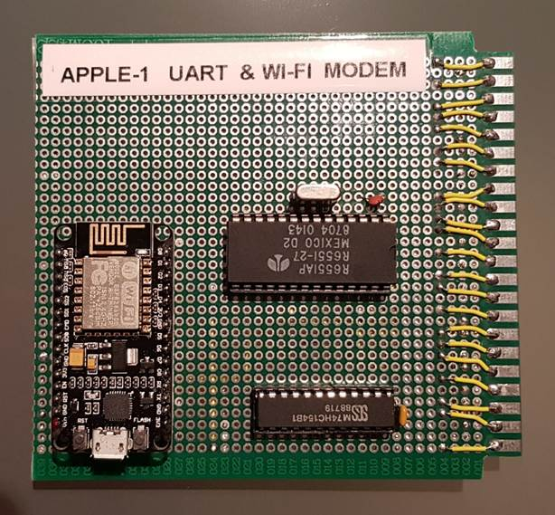
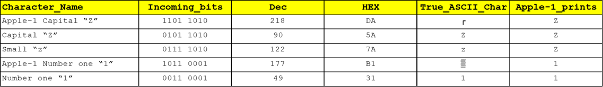
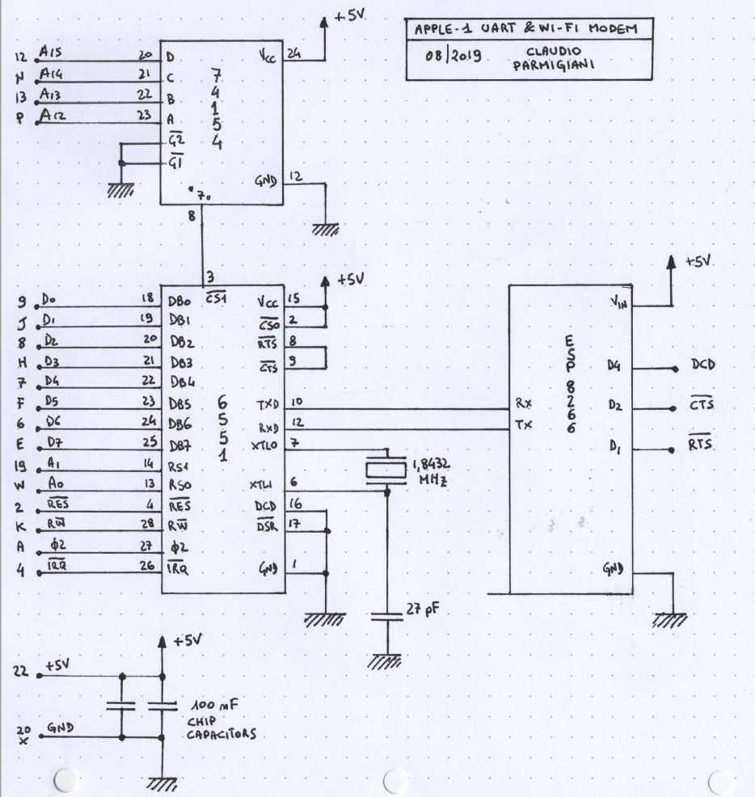

APPLE-1 UART & Wi-Fi MODEM
By Claudio Parmigiani

PURPOSE
Allow the Apple-1 computer (and Replicas) to handle connections with telnet protocol (either outgoing or incoming) in order to connect to existing BBSes or chat sessions (keyboard-to-keyboard)
IMPLEMENTATION
An Asynchronous Communications Interface Adapter (ACIA) 6551 has been used.
It was commonly used as an UART (Universal Asynchronous Receiver-Transmitter) for the 6502 microprocessor; it is addressed through a 74154 (4 to 16 lines decoder/demultiplexer).
UART is then connected to an ESP8266 that acts as an Hayes-compatible Wi-Fi Modem.
The ESP8266 must be programmed following the
instructions:
https://1200baud.wordpress.com/2017/03/04/build-your-own-9600-baud-c64-wifi-modem-for-20/
A small Terminal program written in Assembly is used
to interact with it.
CIRCUIT & ADDRESSING
Power is derived from the 5V main bus. 74154 acts as Address Decoder as described below.
Apple-1’s Address lines from A12 to A15 (A15 is MSB) are connected to 74154’s A...D input lines (D is MSB) in order to split the addressable 64 kiB into 4 kiB chunks.
This operation is very common in this architecture.
Although it would have been possible to use the
signals R, S and T (coming from the mainboard’s 74154, which perform the same
operation) they were not used.
R line is commonly used with Cassette Interface; S and T are
usually not used (not connected) on to original boards.
To guarantee the
functionality of the interface with unmodified original boards the 74154
perform its own “four most significant bit” Address decoding.
It has been decided that 75154’s output named “7”
(corresponding to Addresses from $7000 to 7FFF) is assigned to
the 6551.
To perform this selection, output “7” has been connected to 6551’s /CS1 pin.
Other outputs might be used in the future in order to add functionality to the board, i.e. EPROM etc.
The other 6551’s Chip Select pin, CS0, is
not used and it has been tied to +5V.
Data Bus signals (D0 to D7, D7 is MSB) are connected to 6551, as well as /IRQ, ɸ2, R/W and /RES.
6551’s RS0 and RS1 inputs are respectively connected to Apple-1’s A0 and A1 Address lines: they will be used to read and write the four registers of the 6551.
6551’s TXD and RXD are respectively connected to the ESP8266’s RX and TX.
FLOW CONTROL
Flow control (either hardware or software) is
disabled.
The transmission between ESP8266 and 6551 is basically a three-wire
(TX/RX/Ground) connection.
In this first implementation, the communication
parameters have been fixed to:
· 300 baud, No Parity, 8 data bit, 1 stop bit
Due to the slowness of the video terminal part of the
Apple-1 a higher speed could lead to incoming data loss. Further tests will be
done, along with RTS/CTS
hardware flow control.
At 300 baud, without flow control, the data
flow is very smooth and stable: no data loss has been detected, even during long downloads.
All 6551 registers are initialized by the Terminal
Program to perform the operation above, signal lines have been connected as
follows:
· DCD and /DSR are connected to Ground
· /RTS and /CTS are connected together
On the ESP8266 side: only Vin (+5V), GND
(Ground), TX and RX are used.
D1 (/RTS), D2 (/CTS) and D4 (DCD) are left unconnected.
Flow Control, Speed, Interrupts and all other
parameters are configured by four registers: TX-RXDATA ($7000),
STATUS ($7001), COMMAND ($7002), and CONTROL ($7003). Some of them are bidirectional.
For an exhaustive explanation,
please refer to the datasheet.
INTERRUPT HANDLING
According to the Apple-1 manual, neither /IRQ nor /NMI
signals are used by the system.
By the way, these lines are fully wired from
the expansion connector to the CPU.
IRQ vector is hard-coded on
to the PROM to point at address $0000.
This means that when /IRQ line
is connected to Ground the 6502 will start to execute code from location $0000.
According to 6551 datasheet, many events can trigger
the /IRQ line.
An appropriate initialization of the 6551’s registers trigger
the /IRQ line when the Receiver Data Register is full.
This means
that all the bits of an incoming character have been received: the character
must be read and displayed on the screen.
The IRQ subroutine below must be stored on to
Apple-1 RAM starting from Address $0000:
IRQ: PHA
LDA #$08 ;RX Data Register Full bit
CHECKR: BIT STATUS
BEQ CHECKR
LDA RXDATA
JSR ECHO
PLA
RTI
HEX Dump, for your convenience:
0000: 48 a9 08 2c 01 70 f0 fb ad 00 70 20 ef ff 68 40
Please refer to the complete listing at the end of the document for the definition of STATUS, RXDATA, and ECHO.
CHARACTER ENCODING
Apple-1 handles only upper case characters and forces the Most Significant Bit to 1.
Accordingly to standard ASCII tables, this bit should be 0 for the first 127 characters (which include the classic printable characters).
Therefore, it is not possible to send directly a typed character to the UART because it would be incorrectly interpreted by the Wi-Fi modem (or by the remote host, if connected).
The MSB bit must be zeroed first by a bytewise AND
masking with the binary value 01111111 ($7F).
The result of this operation is that only upper case characters will
be sent to the Wi-Fi Modem.
The entire Apple-1 character set can be transmitted, from SPACE (Decimal=32, $20 in standard ASCII) to UNDERSCORE “_” (Decimal=95, $5F in standard ASCII).
On the incoming side, no masking is needed:
Apple-1 correctly displays the characters (in upper case, of course) even if
the incoming code refers to a lower-case character, ignoring also the MSB bit.
Example:

Any incoming lower case character will be correctly displayed in upper case.
SETUP/INITIALIZATION OF THE WI-FI MODEM
The ESP8266 acts as a Hayes-compatible modem. It uses a subset of the standard AT commands.
The entire command/parameter set is displayed with the command AT?
At the power up: a welcome message will be displayed
at the first keypress.
See chapter “Limitations – Local echo” for setting the local echo for keypresses.
If a Wi-Fi network has been previously set up the
modem will try to connect to it.
The most important commands are:
ATI to display the current network status (Connected/Disconnected, IP, etc.),
AT$SSID=yourWIFInetworkSSID to store the name of your Wi-Fi network,
AT$PASS=yourPassword to store the password of your Wi-Fi network,
AT&W to write all the parameters into the NVRAM,
ATC1 to connect to the Wi-Fi network (may require several attempts the first times).
Please refer to AT? command output
for other commands and parameters.
CONNECT TO A BBS
To connect to a remote BBS just use the command:
ATDT bbsname.domain:portnumber
where bbsname.domain is the domain name of the BBS you want to “call” and portnumber is the port number.
Example:
ATDT A80SAPPLEIIBBS.DDNS.NET:6502
then follow the instructions and enjoy…!
CONSOLE-TO-CONSOLE CONNECTION
The modem usually listen to port 6400, in order to
handle incoming connections.
Every telnet connection addressed
to the
modemWiFiIPaddress:6400 will produce a RING message on
to the Apple-1 screen and will initialize a two-way chat session with the
calling party.
A busy message will be displayed if the ESP8266 has already an active connection.
LIMITATIONS
SSID/Password with lower case characters
Because Apple-1 handles only upper case characters, if your Wi-Fi network name/password contain one or more lower case characters, it will be impossible to set up a connection.
It is possible to use the USB interface to interact with the modem and program it properly.
Modem’s USB interface will be recognized by a modern PC as a Serial Port (Linux / Windows).
COM number / Linux device file name may vary. Use any Terminal program (i.e. PuTTY / minicom) to setup the modem.
Always remember to:
- Disconnect the Apple-1 UART & Wi-Fi modem board from the mainboard BEFORE connecting the USB (if you do not do this, PC’s USB port 5V will try to power up the entire Apple-1…)
- Save the settings with command AT&W BEFORE disconnecting the USB.
Local echo on/off
Local echo is the modem feature that just retransmit back every character received from the keyboard.
The Terminal program do not print anything on the screen. This means that, at least for the first commands, the digitation of the keys will be “blind”.
Local echo must be enabled with the command ATE1 (or disabled with ATE0).
Once ATE1 command is issued, every keypress will be visible on the screen. Save with AT&W.
Double Carriage Return / Telnet Echo
When dialling certain systems, a single Enter/Return
keypress might not be enough to perform the desired action (i.e. login).
A
second press of the Enter/Return usually works.
This happens because of the configuration of the remote server. It can be instructed to accept as "Carriage Return" the ASCII character corresponding to the Enter key (Decimal=13, $0D), or a sequence of "Carriage Return" and "Linefeed" (Decimal=10, $0A).
In this first implementation there is no “Linefeed” code appended to “Carriage Return”.
On other systems, it may happen that there is no echo
of the characters typed, at all.
This is a setting of the remote system. ATE1
command might be also ineffective.
In this case, adding a JSR ECHO call in the
source code of the Terminal (see the commented line) will do the trick.
Please note that under other circumstances this additional call may lead to a double echo issue, that could however be mitigated by using ATE0 Command.
ANSI (in)compatibility
Usually, modern Terminals supports ANSI codes.
ANSI codes are
sequences of bytes used to control the position of the cursor, colours and
other options. Apple-1 video section is more like a Teletype than a Terminal:
there is neither cursor control nor CLEAR SCREEN, BACKSPACE, video RAM.
So ANSI is not supported, at all.
If you connect to
systems that use ANSI codes, you will see many garbage characters on the
screen.
CFFA1 Compatibility
The CFFA1 CompactFlash Card has 28 kiB of SRAM on-board
that can be mapped from location $1000 to $7FFF.
The UART board
has been mapped from address $7xxx.
To avoid unpredictable computer operation due to bus fighting, SRAM must be disabled by setting Switch S1-2 to ON (see page 10 of the CFFA1 manual).
Alternatively, UART board could be remapped to
another range of Addresses by choosing another 74154 output.
In this case, the
definition of the registers in the source code of the Terminal program
will have to be updated accordingly.
TERMINAL PROGRAM
Code starts at $0600, execute with 600R
IRQ routine must be stored as well, starting from Address $0000, as stated above in this document.
--------------------------------------------------------------------------------------------------
define TXDATA $7000 ;TXDATA
define RXDATA $7000 ;RXDATA
define STATUS $7001 ;Status Register
define COMMND $7002 ;Command Register
define CONTRL $7003 ;Control Register
define ECHO $FFEF ;WOZ Monitor's ECHO
INIT: LDA #$16 ;00010110 (300N81, internal Oscillator)
STA CONTRL
LDA #$09 ;00001001 (no parity, no echo, RTS low, YES RX IRQ, DTR low)
STA COMMND
CLI ;listen to Interrupts
LOOP: JSR KBDIN
JMP LOOP
KBDIN: LDA $d011 ;read key from keyboard
BPL KBDIN
LDA $d010
AND #$7F ;set MSB to 0
;JSR ECHO ;do not use: see chapter “Limitation – Double Carriage Return / Telnet echo”
JSR TXCHAR
RTS
TXCHAR: STA TXDATA
CHECKT: LDA STATUS ;Load Status Register
AND #$10 ;TX Data Register Empty bit
BEQ CHECKT
BNE KBDIN
--------------------------------------------------------------------------------------------------
HEX Dump, for your convenience:
0600: a9 16 8d 03 70 a9 09 8d 02 70 58 20 11 06 4c 0b 0610: 06 ad 11 d0 10 fb ad 10 d0 29 7f 20 1f 06 60 8d 0620: 00 70 ad 01 70 29 10 f0 f9 d0 e6
SCHEMATIC

Note: ESP8266’s /RTS, /CTS, DCD lines are not in use.
TO-DO LIST
- A small storage (EPROM/EEPROM), to have the Terminal program ready for use.
- A true RS232 port, made with a MAX232 IC, to connect the board to old-style analog modem or TNCs.
OFFICIAL VIDEO
https://www.youtube.com/watch?v=RZQIiZeth6E
SIMILAR PROJECTS
None known (August 2019).
BIBLIOGRAPHY
6551 Wiki & Datasheet
https://en.wikipedia.org/wiki/MOS_Technology_6551
http://archive.6502.org/datasheets/mos_6551_acia.pdf
74154 Datasheet
https://www.unicornelectronics.com/ftp/Data%20Sheets/74154.pdf
ESP8622 firmware and information
https://1200baud.wordpress.com/2017/03/04/build-your-own-9600-baud-c64-wifi-modem-for-20/
https://github.com/RolandJuno/esp8266_modem
ASCII Table
https://www.rapidtables.com/code/text/ascii-table.html
HAYES Command set
https://en.wikipedia.org/wiki/Hayes_command_set
ANSI Escape Codes
https://en.wikipedia.org/wiki/ANSI_escape_code
CFFA1 CompactFlash Interface for Apple-1
http://dreher.net/projects/CFforApple1/downloads/CFFA1_Manual_1.1.pdf
Apple-1 Operations manual